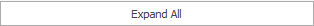

Customize fields
The customize fields form is used to show more available fields in the panel, hide some of the fields that were already shown or to customize their settings e.g. to make the field read-only.
The form is opened through the  button in the View tab of the command ribbon or by right-clicking into the panel whose fields you would like to customize.
button in the View tab of the command ribbon or by right-clicking into the panel whose fields you would like to customize.
The left side contains all the fields that are available to show for a particular panel.
The tick  marks the fields that are currently shown in the panel.
marks the fields that hidden.
marks the fields that are currently shown in the panel.
marks the fields that hidden.

On the right side you have a full list with the fields that are currently shown.
You can reposition the fields around the form in the desired order with the Up  and Down
and Down  buttons.
buttons.
Click the  button to close the customize fields form.
button to close the customize fields form.
The  button opens the expression fields form.
button opens the expression fields form.
The  expands all hierarchical groups of fields on the left side of the form.
Open Field properties by clicking the button.

The ‘Visible’ checkbox shows whether the field is shown in the current form. The ‘Enter stop’ shows whether the cursor stops in the field after pressing ’enter’ or it would reposition to the next field. The ‘Numeric sort’ indicates whether the field will be sorted numerically or by a string.
Display format
Shows how the format in which the field's value is displayed into the form.
Click the  button to open the String format.
button to open the String format.

The Category section on the left has the unit categories for the field such as ‘number’ or ‘currency’.
The right part is separated into three panels – Sample, Standard types and Custom:
- Sample - the visual representation of what is going to be inside the field
- Standard Types - Encoded unit standards for the settings. The content of 'Sample' will change right after clicking on the standard type of choice.
- Custom - types set by the customer. Used the same way as the Standard.
Example: A number is typed out with three digits after the decimal separator. It must be displayed with 2 symbols only. Open String format. Select the 'Number' category. Select 'n2' Standard type. Click 'OK'.

Edit format
In the field we can directly set a mask to specify how to visualize the field's value while editing it. Using the edit form you can adjust the format of the document number field.
Example:
MaskType = Numeric, EditMask = 0000000000.
Its behavior is as follows - when we click in the field the marker is finally positioned and to the left of it are the numbers in the format for example 0000004568, or 0000000000 if the field is empty.
When we start entering numbers from the keyboard, it replaces the existing ones from right to left of the marker.